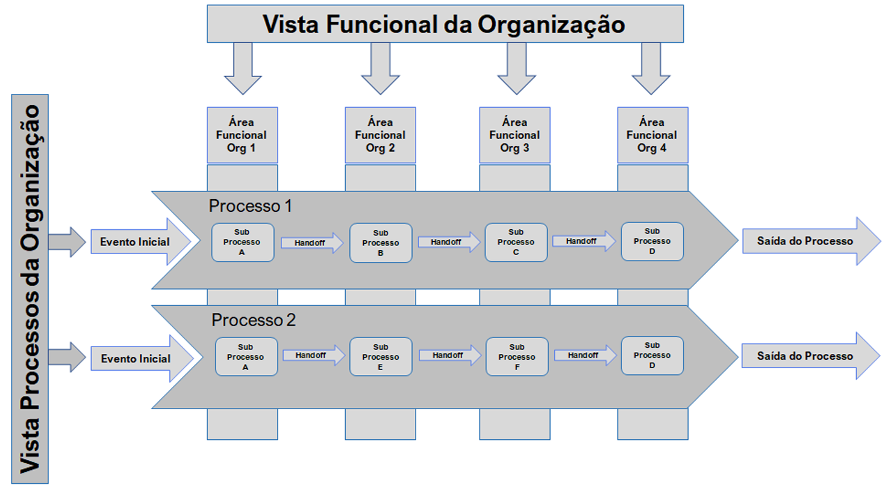
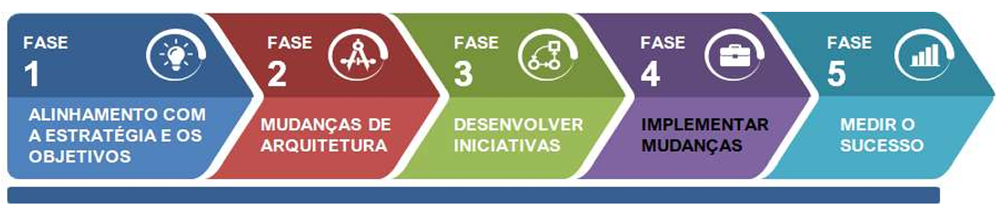
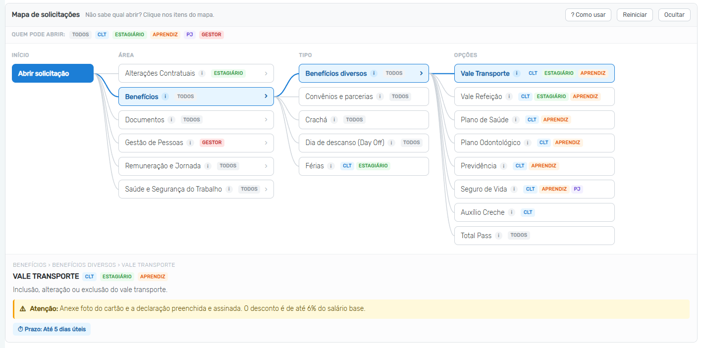
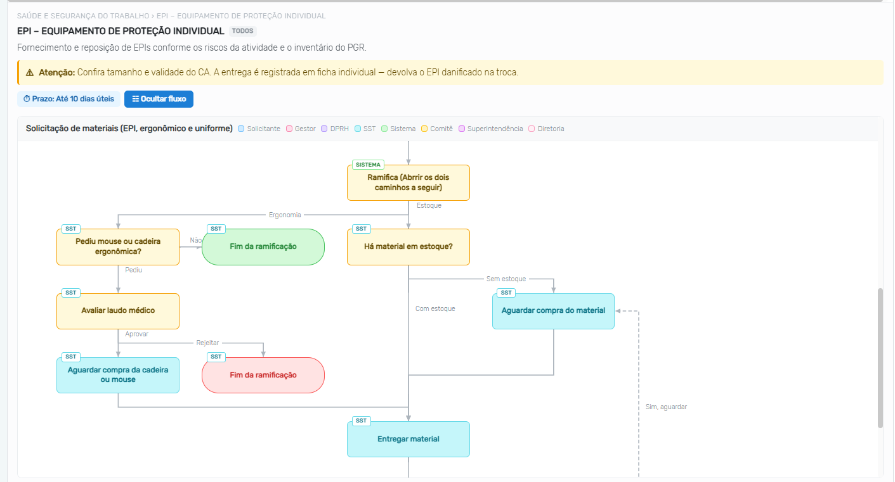
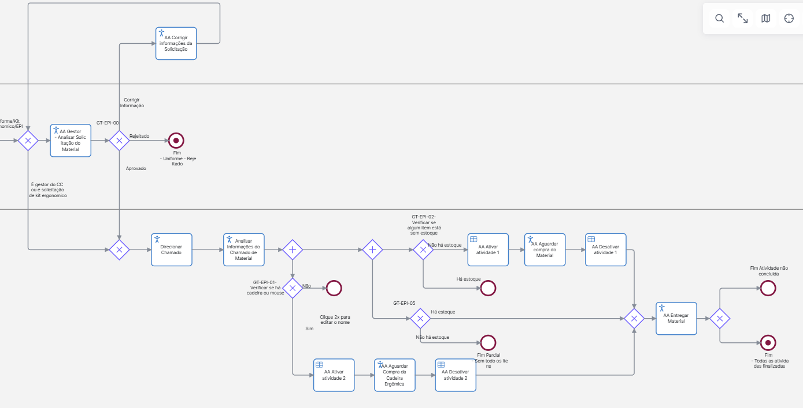
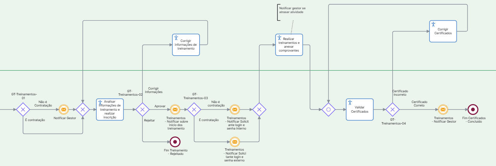

BPM e Tecnologia: Desafios e perspectivas da modelagem dos processos de suporte do RH
Ficha do projeto
- Contexto: Modelagem e implementação tecnológica dos processos de suporte do RH da Intertechne, empresa de consultoria em engenharia.
- Meu papel: conduzi o mapeamento AS-IS, a modelagem TO-BE em BPMN e o desenvolvimento das automações: o mapa de solicitações, com manual e fluxogramas integrados ao formulário, a validação automática de regras modeladas em DMN e e-mails automáticos.
- Período: 01/07/2026 a 03/10/2026
- Ferramentas: BPMN e Decision Model and Notation (bpmn.io), Zeev e SVG
- Entrega: 26 processos mapeados, remodelados e implementados no Zeev (Plataforma BPMS de Processos), organizados em seis áreas, com mapa de solicitações e automações próprias; lançamento em 05/10/2026
Sumário
Resumo
Este trabalho apresenta o mapeamento, a remodelagem e a redigitalização dos processos de suporte do Serviço de Atendimento ao Colaborador do RH (SACRH) da Intertechne, conduzidos entre julho e outubro de 2026. O projeto seguiu o ciclo de vida BPM (Business Process Management): os processos foram modelados na notação BPMN (Business Process Model and Notation) e implementados no Zeev, uma plataforma de BPMS (Business Process Management System). O resultado é um catálogo de 26 tipos de solicitação, atendidos por três setores do RH: Departamento Pessoal, Saúde e Segurança do Trabalho e Desenvolvimento Humano Organizacional, e organizados, pela primeira vez, em seis áreas, o que trouxe organização à abertura dos chamados. A implementação incluiu um conjunto de automações: um mapa interativo de solicitações, que funciona como manual dentro do formulário e exibe os fluxogramas dos processos, a validação automática de regras modeladas em DMN (Decision Model and Notation), o envio automático de e-mails e o cálculo automático de campos. Nos três casos de maior complexidade (fornecimento de Equipamento de Proteção Individual (EPI), Treinamentos e Mapeamento de Oportunidades), formulários em .docx, planilhas de controle manual e trocas de e-mail deram lugar a um registro único e rastreável no Zeev. EPI, Uniforme e Materiais Ergonômicos passaram a compartilhar um único fluxo de solicitação de materiais, que admite entrega parcial por item. O trabalho também relaciona cada tipo de solicitação aos processos primários que ele afeta, sobretudo a elaboração de projetos e a mobilização de equipes para obras. Esses impactos são esperados: foram levantados com os setores durante o projeto e passam a ser medidos com o lançamento, por meio dos indicadores propostos.
Introdução
Numa empresa de engenharia, ninguém entra legalmente numa obra sem Equipamento de Proteção Individual (EPI) e sem os treinamentos obrigatórios, como o de trabalho em altura (NR35). Os processos que garantem isso não entregam nada diretamente ao cliente, mas, quando falham, a equipe não é mobilizada e o projeto atrasa. Este trabalho parte dessa constatação: os processos de suporte do RH, embora invisíveis para o cliente, condicionam a execução dos processos que entregam valor a ele.
O guia BPM CBOK classifica os processos de uma organização em três tipos (ABPMP, 2013):
- Primários: processos ponta a ponta que atravessam várias áreas e entregam valor diretamente ao cliente. São o núcleo do que a organização faz para cumprir sua missão.
- De suporte: sustentam os processos primários, em geral administrando os recursos e a infraestrutura de que eles dependem. Não entregam valor diretamente ao cliente, mas isso não os torna secundários: quando falham, comprometem a execução dos processos primários.
- De gestão: medem, monitoram e controlam as atividades da organização, para que os demais processos atinjam suas metas.
No gerenciamento e no planejamento de obras, os processos de suporte do RH afetam diretamente os objetivos da empresa e não só em campo. Se pedir um material ergonômico for demorado e burocrático por causa de retrabalho, a tendência é que os colaboradores deixem de pedir, o que pode aumentar as lesões no escritório e, no limite, levar a afastamentos. E todo retrabalho consome tempo de quem solicita.
Além do tipo, importa o caminho que cada processo percorre. Numa organização estruturada por funções (Figura 1), um processo ponta a ponta atravessa vários silos, e cada handoff — a passagem de responsabilidade de uma área para outra — é um ponto em que o trabalho pode esperar, se perder ou voltar.

Acompanhar dezenas de processos ponta a ponta, que mudam continuamente junto com a organização, exige uma visão de conjunto que e-mails e planilhas não oferecem. Digitalizá-los numa plataforma de gestão de processos (BPMS) fornece essa visão: cada solicitação passa a ter responsável, etapa e histórico, e os dados gerados permitem medir e melhorar. Mas automatizar exige padronizar, e nem todo processo admite padronização: há atividades que agregam valor justamente por serem conduzidas caso a caso, como o atendimento de um médico a um paciente.
Na Intertechne, as solicitações dos colaboradores ao RH são atendidas pelo Serviço de Atendimento ao Colaborador do RH (SACRH), sob responsabilidade de três setores: Departamento Pessoal (DP), Saúde e Segurança do Trabalho (SST) e Desenvolvimento Humano Organizacional (DHO). Este trabalho descreve o mapeamento, a remodelagem e a implementação BPMS desses processos segundo o ciclo de vida BPM, com modelagem em BPMN e implementação no Zeev, apresenta as automações desenvolvidas para apoiar os novos fluxos e discute os impactos esperados sobre as atividades-fim da empresa.
Metodologia
O projeto seguiu as cinco fases do ciclo de vida BPM (Figura 2).

- Alinhamento com a estratégia e os objetivos. Em reuniões com DP, SST e DHO, foram levantados os processos atendidos pelo SACRH. Uma planilha de acompanhamento registrou, para cada processo, o setor e o responsável, a decisão de migrar ou não para o Zeev, o status da implementação, o mapeamento dos campos e a etapa de testes. Os processos considerados não elegíveis para a migração ficaram fora do escopo.
- Mudanças de arquitetura. Os processos selecionados foram mapeados no estado atual (AS-IS) em BPMN (OMG, 2011), na ferramenta bpmn.io, com a identificação de atores, atividades, pontos de decisão, handoffs e retrabalhos. Esse retrato da arquitetura atual é o ponto de partida das mudanças.
- Desenvolvimento de iniciativas. A partir do AS-IS, foram modelados os processos futuros (TO-BE): fluxos redefinidos, etapas padronizadas, eliminação das atividades sem valor agregado e regras de negócio explícitas, modeladas em DMN (Decision Model and Notation), a notação da OMG para decisões (OMG, 2024). Os tipos de solicitação também passaram a ser organizados em seis áreas.
- Implementação de mudanças. Os processos TO-BE foram implementados no Zeev, com formulários, regras de validação, automações (descritas em Automações implementadas) e integrações com bases de dados corporativas visando "puxar" informações dos Colaboradores, Equipes, Projetos, etc. Cada processo foi testado com o setor responsável antes de ser liberado.
- Medição do sucesso. Foram definidos indicadores para acompanhar os processos após a implantação, apresentados nos casos em destaque e em Perspectivas futuras.
Para relacionar os processos de suporte às atividades-fim, consideraram-se três processos primários da empresa:
- P1 – Elaboração de projetos de engenharia
- P2 – Mobilização de equipes para obras e clientes
- P3 – Gestão de contratos e faturamento
Os impactos de cada processo de suporte sobre P1, P2 e P3 foram levantados nas reuniões de mapeamento, nas sessões de teste e nos relatos dos setores. Como a medição só começa com o lançamento, esses impactos são esperados, e não medidos. Quando a relação com os processos primários é indireta (por meio da retenção, da satisfação ou da conformidade legal), ela é indicada como tal.
Resultados
Escopo e organização por áreas
Antes do projeto, os tipos de solicitação ao RH não eram agrupados por área. O novo SACRH reúne 26 tipos de solicitação em seis áreas: Alterações Contratuais (4), Benefícios (5), Documentos (5), Gestão de Pessoas (3), Remuneração e Jornada (3) e SST (6), o que trouxe organização à abertura dos chamados: o colaborador parte da área da sua necessidade e vê os tipos ligados a ela (Tabela 1). Todos passaram pelo ciclo de vida BPM e foram implementados no Zeev. Quinze afetam diretamente ao menos um processo primário, sobretudo a elaboração de projetos (P1) e a mobilização de equipes (P2); os outros onze têm efeito indireto.
| Nº | Área | Tipo de solicitação | Primário | Impacto esperado |
|---|---|---|---|---|
| 1 | Alterações Contratuais | Alteração da Modalidade de Estágio | Indireto | Formaliza a troca entre estágio obrigatório e não obrigatório e mantém o contrato alinhado às exigências do curso. |
| 2 | Declaração de Estágio | Indireto | Fornece ao estagiário a comprovação exigida pela instituição de ensino e mantém o estágio regular. | |
| 3 | Mudança de Horário de Estágio | Indireto | Formaliza o ajuste da jornada dos estagiários à demanda dos estudos e dá previsibilidade ao apoio prestado às equipes. | |
| 4 | Reajuste da Bolsa de Estágio | Indireto | Organiza as revisões periódicas da bolsa e ajuda a reter os estagiários. | |
| 5 | Benefícios | Benefícios Diversos | Indireto | Resolve as movimentações de benefícios num canal único, com reflexo na satisfação e na retenção dos colaboradores. |
| 6 | Convênios e Parcerias | Indireto | Aumenta a satisfação dos colaboradores e fortalece a retenção de talentos técnicos. | |
| 7 | Crachá | P1 | Repõe rapidamente o crachá de identificação e acesso, para que a perda ou a troca não interrompa o trabalho nos projetos. | |
| 8 | Day Off | P1 | Organiza as folgas com antecedência, sem comprometer cronogramas e entregas. | |
| 9 | Férias | P1 | Permite planejar as férias e o recesso dos estagiários e redistribuir as equipes sem afetar os prazos dos projetos. | |
| 10 | Documentos | Enviar Atestado Médico | P1 | Registra rapidamente as ausências, o que ajuda a planejar a alocação das equipes nos projetos. |
| 11 | Documentação Trabalhista para Clientes | P3 | Atende às exigências contratuais dos clientes, condição para manter os contratos e receber as medições. | |
| 12 | Cadastro de Fornecedor SAP | P1 | Agiliza reembolsos, adiantamentos e pagamentos de despesas de quem atua nos projetos. | |
| 13 | Emissão de Declarações | P1 | Fornece os documentos exigidos por clientes e órgãos sem atrasar as demandas dos projetos. | |
| 14 | PPP | Indireto | Mantém a conformidade previdenciária das atividades técnicas e reduz o passivo trabalhista. | |
| 15 | Gestão de Pessoas | Mapeamento de Oportunidades | P2 | Antecipa a demanda de pessoal das próximas obras e projetos e reduz o tempo de composição das equipes. |
| 16 | Efetivação de Estagiário(a) | Indireto | Converte estagiários em empregados CLT e mantém nos projetos profissionais já formados na empresa. | |
| 17 | Reajuste de Remuneração CLT | Indireto | Dá agilidade e rastreabilidade às decisões salariais e ajuda a reter profissionais-chave dos projetos. | |
| 18 | Remuneração e Jornada | PPR | Indireto | Liga os resultados da empresa ao engajamento das equipes que executam os projetos. |
| 19 | Problemas na Folha de Pagamento | Indireto | Corrige divergências da folha e garante a remuneração correta, reduzindo retrabalho e interrupções das equipes produtivas. | |
| 20 | Problemas no Ponto | P1, P3 | Garante registros de jornada confiáveis, base para apropriar horas aos projetos e faturar. | |
| 21 | SST | Comunicar Acidente ou Incidente | P2 | Garante resposta e registro legal imediatos, o que reduz paralisações e riscos em obras e no campo. |
| 22 | Elaboração de Programas Legais (PGR/PCMSO) | P2 | Mantém a conformidade legal exigida para atuar em obras e atender aos clientes. | |
| 23 | Treinamentos Legais | P2 | Garante as qualificações legais (por exemplo, NR35) e técnicas exigidas para mobilização e execução em campo. | |
| 24 | EPI | P2 | Assegura a proteção das equipes de campo, condição para mobilizar e executar atividades em obra. | |
| 25 | Materiais Ergonômicos | P1 | Melhora as condições de trabalho dos projetistas e de quem atua no escritório, com reflexo na produtividade e na redução de afastamentos. | |
| 26 | Uniforme | P2 | Padroniza e identifica as equipes em obras e clientes, atendendo a exigências contratuais e de segurança. |
Nota: EPI, Uniforme e Materiais Ergonômicos compartilham um único fluxo de solicitação de materiais no Zeev; Férias inclui o recesso dos estagiários; Benefícios Diversos reúne oito benefícios como opções de um mesmo tipo, do vale-transporte ao plano de saúde. Siglas: PGR – Programa de Gerenciamento de Riscos; PCMSO – Programa de Controle Médico de Saúde Ocupacional; PPP – Perfil Profissiográfico Previdenciário; PPR – Programa de Participação nos Resultados.
Fonte: elaborado pelo autor (2026).
Padrão comum dos fluxos
Apesar das particularidades de cada processo, os fluxos modelados seguem a mesma estrutura:
- o solicitante preenche as informações no Zeev;
- um ou mais aprovadores analisam a solicitação: o gestor, o setor responsável ou, em casos como o reajuste salarial, instâncias como a diretoria e um comitê;
- cada aprovador pode aprovar, rejeitar ou devolver a solicitação ao solicitante para correção;
- o processo termina com a execução da demanda ou com uma rejeição justificada.
Essa estrutura comum tende a reduzir a curva de aprendizado de quem abre chamados e facilita a manutenção dos fluxos na plataforma. O ponto de partida também se repetia em EPI e Treinamentos: a solicitação vinha acompanhada de um formulário em .docx preenchido manualmente e, ao fim do atendimento, os dados eram transcritos para uma planilha de controle. Isso gerava retrabalho, risco de erro de transcrição e dificuldade para consultar o histórico de cada colaborador. Nos fluxos digitais, os dados passam a ser registrados uma única vez no Zeev.
Automações implementadas
Além dos fluxos, a implementação incluiu automações que orientam o colaborador na abertura do chamado, conferem as informações enviadas e comunicam os eventos do processo sem trabalho manual.
Mapa de solicitações: o manual dentro do formulário
Com 26 tipos de solicitação, escolher o chamado certo deixa de ser trivial. Para orientar o colaborador, o formulário do SACRH ganhou um mapa interativo de solicitações, exibido acima dos campos com o convite "Não sabe qual abrir? Clique nos itens do mapa". O mapa funciona como um manual integrado ao sistema:
- Navegação em níveis. O colaborador percorre área → tipo → opções, entre as seis áreas do SACRH. A cada clique, o mapa preenche sozinho os campos correspondentes do formulário e dispara os eventos de mudança, para que as regras do Zeev ligadas a esses campos reajam.
- Orientação antes da abertura. Cada tipo exibe a descrição do processo, um aviso com as regras principais, o prazo de atendimento e etiquetas com os perfis que podem abri-lo (CLT, estagiário, aprendiz, PJ ou gestor); solicitações fora do perfil são canceladas.
- Fluxogramas. Cinco fluxogramas, que cobrem sete tipos de solicitação: Férias e Recesso; materiais da SST (EPI, ergonômicos e uniforme); Mudança de Horário de Estágio; Crachá; e Reajuste de Remuneração CLT, mostram as etapas coloridas por ator: solicitante, gestor, DP, SST, sistema e instâncias de aprovação como diretoria e comitê. Os fluxos são declarados como dados (etapas, atores e conexões) e desenhados pelo próprio script em SVG, com conexões em ângulo reto, retornos tracejados e rótulos; incluir ou alterar um fluxo não exige ferramenta de desenho.
- Tutorial guiado. Ao abrir o formulário, um tutorial de cinco passos destaca cada parte do mapa. Ele pode ser navegado pelo teclado e reaberto pelo botão "Como usar".
- Robustez e acessibilidade. Os itens do mapa podem ser acionados pelo teclado. O script aguarda o Zeev montar o formulário antes de se inserir e continua funcionando quando o navegador bloqueia o armazenamento local.

O lançamento foi acompanhado de um material de apoio aos colaboradores, que explica o acesso ao SACRH e o uso do mapa. Além disso, para guiar o processo na plataforma, desenvolvi junto do mapa de solicitações o fluxograma do processo, integrado na inicialização do processo, como segue na Figura 4.


Regras, cálculos e e-mails automáticos
Validação automática de regras. As regras de decisão dos processos foram modeladas em DMN e passaram a ser aplicadas automaticamente, a partir dos dados do formulário. Parte das decisões dos fluxos é tomada pelo próprio sistema: se o pedido é de material ergonômico ou foi aberto por um gestor (casos que dispensam a aprovação do gestor), se a mudança de horário de estágio altera a carga horária (o que exige termo aditivo) e se o reajuste envolve mudança de cargo (o que pode exigir novo Atestado de Saúde Ocupacional, o ASO). As regras dos benefícios também são conferidas automaticamente. No Day Off, por exemplo, as condições do benefício: folga no mês do aniversário, pedida com pelo menos cinco dias de antecedência são verificadas pelo formulário, e não mais pelo RH depois do envio.
Cálculos automáticos. Campos que dependem de outros passam a ser calculados pelo formulário. Na solicitação de férias, o número de dias é obtido das datas de início e término, e o campo fica bloqueado para edição, o que evita erros de contagem.
E-mails automáticos. O fluxo envia e-mails automaticamente em duas situações: as informações de acesso dos treinamentos online, como login e plataforma, chegam ao colaborador sem envio manual; e os envolvidos são avisados sempre que uma solicitação depende de uma ação deles, como uma aprovação ou uma correção.

Casos em destaque
Três processos se destacaram pela complexidade de mapeamento e modelagem. Dois são da SST: EPI e Treinamentos, os quais refletem as características do setor: muitos atores, aprovações em mais de uma etapa, várias saídas possíveis e, no caso do EPI, dependência de estoque. O terceiro, Mapeamento de Oportunidades, do DHO, se destacou por outro motivo: não havia um fluxo padronizado a mapear. Os três têm relação direta com a mobilização de equipes (P2).
EPI e o fluxo único de materiais
Por que importa. O EPI é requisito legal para a presença em obra e, dependendo do acidente, pode salvar vidas. Por isso, o processo foi priorizado pela relação direta com a mobilização de equipes (P2). Com a SST, foram definidos três objetivos: reduzir o tempo entre a solicitação e a entrega, garantir a rastreabilidade dos itens entregues e diminuir o retrabalho no atendimento.
Desafio. Uma mesma solicitação pode reunir itens com e sem estoque, e cada tipo de material tem suas próprias regras de aprovação: do aval do gestor ao laudo médico exigido para cadeiras e mouses ergonômicos. O mapeamento mostrou ainda que EPI, Uniforme e Materiais Ergonômicos, tratados como processos separados, repetiam as mesmas etapas de análise, verificação de estoque e entrega.
Solução. O TO-BE unificou os três num único fluxo de solicitação de materiais, cujo fluxograma aparece na Figura 4. O próprio sistema faz a triagem: pedidos de material ergonômico e pedidos abertos por gestores seguem direto para a SST; os demais passam antes pelo gestor, que pode aprovar, rejeitar ou devolver para correção. Na SST, o fluxo se divide em dois ramos paralelos. No de estoque, os itens disponíveis seguem para entrega e os que faltam, para compra. No ergonômico, pedidos de cadeira ou mouse exigem laudo médico, avaliado pela SST antes da compra. A entrega pode ser parcial: enquanto houver itens em compra, a solicitação volta a aguardá-los até que o material chegue e seja entregue.
No Zeev, o formulário usa uma tabela multivalorada em que cada linha é um item, com seu próprio status de entrega. Regras em JavaScript impedem a edição das linhas já marcadas como "Entregue" e bloqueiam a inclusão e a exclusão de linhas durante o atendimento, o que preserva a integridade do registro. A Tabela 2 resume as mudanças.
| Aspecto | Antes (AS-IS) | Depois (TO-BE no Zeev) |
|---|---|---|
| Registro do pedido | Chamado com nome, data e descrição dos itens, mais um formulário .docx preenchido manualmente | Formulário no Zeev, com um item por linha |
| Controle das entregas | Transcrição manual para uma planilha de controle | Status de entrega por item, registrado uma única vez |
| Histórico | Difícil de consultar por colaborador | Histórico de cada entrega, com data e responsável |
| EPI, Uniforme e Materiais Ergonômicos | Processos separados, com etapas semelhantes | Um único fluxo de solicitação de materiais |
Indicadores propostos: tempo médio entre a solicitação e a entrega; percentual de solicitações atendidas com estoque disponível; tempo de espera dos itens que dependem de compra.
Treinamentos
Por que importa. Os treinamentos legais também são requisito para a presença em obra, o que liga o processo diretamente à mobilização de equipes (P2). Com a SST, os objetivos definidos foram reduzir o tempo entre a solicitação e a conclusão dos treinamentos, garantir a rastreabilidade dos treinamentos e dos certificados e diminuir o retrabalho no atendimento.
Desafio. A solicitação não termina na aprovação: cada treinamento tem datas, modalidade e local próprios, e o processo só pode ser encerrado quando o colaborador comprova a conclusão. No estado atual, não havia mecanismo estruturado para acompanhar prazos, modalidade e comprovação depois da solicitação.
Solução. O TO-BE prevê a aprovação do gestor do centro de custo e o envio automático, por e-mail, das informações de cada treinamento ao colaborador: data de início, data limite e local (login e plataforma), se for online; endereço e horário, se for presencial. No Zeev, uma tabela multivalorada registra cada treinamento com suas datas, modalidade, local e status de conclusão. Ao final, o colaborador anexa os certificados e a SST os valida; se algum certificado for recusado ou algum treinamento continuar pendente, a solicitação volta ao colaborador, e o ciclo se repete até que todos estejam concluídos e comprovados. A Tabela 3 resume as mudanças.
| Aspecto | Antes (AS-IS) | Depois (TO-BE no Zeev) |
|---|---|---|
| Registro do pedido | Chamado com a descrição dos treinamentos, mais um formulário .docx preenchido manualmente | Formulário no Zeev, com um treinamento por linha |
| Controle | Transcrição manual para uma planilha de controle | Registro único, com histórico por colaborador |
| Acompanhamento | Sem mecanismo estruturado para prazos e modalidade | Data de início, data limite, modalidade e local enviados ao colaborador por e-mail automático |
| Conclusão | Sem comprovação estruturada | Certificados anexados ao fluxo e validados pela SST |
Indicadores propostos: tempo médio entre a solicitação e a conclusão dos treinamentos; percentual de treinamentos concluídos dentro da data limite; tempo médio de validação dos certificados pela SST.
Mapeamento de Oportunidades
Por que importa. Planejar equipes para obras e projetos futuros é uma necessidade recorrente. Por isso, o processo foi priorizado pela relação direta com a mobilização de equipes (P2) e com o planejamento da capacidade operacional. Com as diretorias e os gestores das áreas técnicas, definiram-se como objetivos antecipar a demanda de mão de obra, identificar profissionais com potencial para futuras mobilizações, reduzir o tempo de composição das equipes e tornar a alocação de recursos mais assertiva.
Desafio. Diferentemente dos outros casos, não havia um fluxo padronizado a mapear. Os gestores registravam as necessidades futuras de forma descentralizada, sendo: por e-mail, planilhas ou mensagens, e as informações sobre funções, período de mobilização e perfis desejados ficavam dispersas em vários documentos. Isso dificultava consolidar a demanda, gerava retrabalho e aumentava o risco de atraso na mobilização.
Solução. O TO-BE pede ao gestor a obra ou o projeto previsto, a data estimada de início, as funções necessárias, a quantidade de profissionais e os requisitos técnicos. O DHO valida as informações e levanta perfis internos e externos para as posições, considerando experiência, disponibilidade, capacitações e eventuais necessidades de treinamento ou desenvolvimento. No SACRH, o tipo é exclusivo de gestores: pedidos abertos por outros perfis são cancelados, e tem prazo de atendimento de até 15 dias úteis. Um formulário estruturado centraliza essas demandas num único fluxo, no qual as oportunidades podem ser consultadas, acompanhadas e atualizadas. A Tabela 4 resume as mudanças.
| Aspecto | Antes (AS-IS) | Depois (TO-BE no Zeev) |
|---|---|---|
| Canal | E-mail, planilhas e mensagens, sem padrão | Formulário único no Zeev |
| Informações | Funções, período e perfis dispersos em vários documentos | Obra, data estimada, funções, quantidade e requisitos num registro estruturado |
| Visão da demanda futura | Difícil de consolidar | Consulta, acompanhamento e atualização num só lugar |
| Histórico das decisões | Disperso entre e-mails e planilhas | Registrado no próprio fluxo |
Indicadores propostos: quantidade de oportunidades mapeadas por período; percentual de posições preenchidas com profissionais previamente identificados; tempo médio para definir as equipes de mobilização; percentual de demandas atendidas sem contratação emergencial.
Perspectivas futuras
Com o lançamento do SACRH no Zeev, em 5 de outubro de 2026, começa a quinta fase do ciclo de vida BPM: a medição do sucesso. Além dos indicadores de cada caso, propõe-se acompanhar, para todos os processos:
- tempo médio de atendimento;
- taxa de retrabalho (solicitações devolvidas para correção);
- percentual de chamados cancelados ou devolvidos por terem sido abertos no tipo ou no perfil errado, que mostra o efeito do mapa de solicitações e da organização por áreas;
- volume de chamados por área e por tipo de solicitação;
- percentual de chamados atendidos dentro do prazo;
- satisfação do solicitante, medida por uma pesquisa curta ao fim do atendimento.
Esses dados podem ser extraídos pela API do Zeev e consolidados em painéis de acompanhamento, apoiando a melhoria contínua dos processos. Como próximos passos, propõe-se:
- levantar uma linha de base a partir das planilhas de controle antigas, para comparar os indicadores antes e depois da implantação;
- verificar, com dados reais, os impactos esperados apresentados na Tabela 1;
- estender a abordagem a outros processos de suporte da empresa.
Limitações
Os impactos sobre os processos primários são esperados: foram levantados com os setores durante o projeto e ainda não foram medidos. A relação de cada tipo de solicitação com P1, P2 e P3 (Tabela 1) é uma classificação qualitativa, que os indicadores deverão confirmar. Além disso, o estudo trata de uma única organização, o que limita a generalização dos resultados.
Conclusão
O projeto levou os 26 tipos de solicitação do SACRH pelas quatro primeiras fases do ciclo de vida BPM, do levantamento com os setores à implementação no Zeev, organizou o catálogo em seis áreas e deixou definidos os indicadores para a quinta fase, a medição. Nos três casos detalhados, formulários em .docx, planilhas de controle manual e trocas de e-mail deram lugar a um registro único e rastreável. Sobre os fluxos, uma camada de automação (o mapa de solicitações, a validação de regras, os cálculos e os e-mails automáticos) orienta o colaborador e confere as informações já na abertura do chamado.
O projeto deixa três lições. Solicitações com vários itens, como materiais e treinamentos, pedem status por item, para que uma pendência não bloqueie o restante. Uma estrutura comum entre os fluxos simplifica o trabalho de quem usa e de quem mantém a plataforma. E orientar o colaborador no momento da abertura tende a custar menos do que corrigir a solicitação depois.
Por fim, os casos ilustram a premissa da qual este trabalho partiu: processos de suporte não entregam valor diretamente ao cliente, mas, quando falham, travam os processos que entregam.
Referências
ABPMP – ASSOCIATION OF BUSINESS PROCESS MANAGEMENT PROFESSIONALS. BPM CBOK: guia para o gerenciamento de processos de negócio – corpo comum de conhecimento. Versão 3.0. [S.l.]: ABPMP, 2013.
OMG – OBJECT MANAGEMENT GROUP. Business Process Model and Notation (BPMN): version 2.0. Needham: OMG, 2011.
OMG – OBJECT MANAGEMENT GROUP. Decision Model and Notation (DMN): version 1.5. Needham: OMG, 2024.